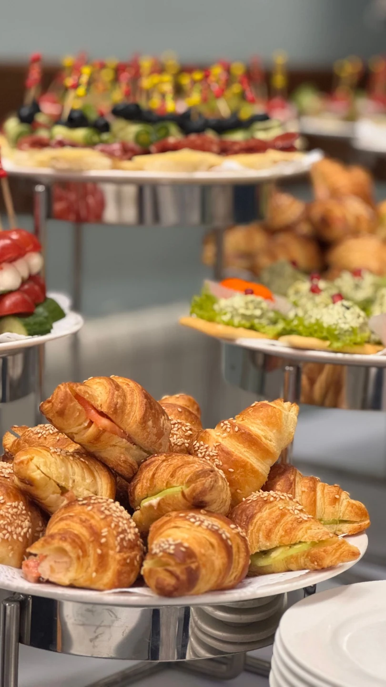

OPTION M1 · PEXELS #35783751
Meeting catering · A styled breakfast station
My first choice: golden croissants, raised presentation, and layered food displays. A real catered-station setting with editorial depth.
Photo: Mary Kamaeva
View original & download →